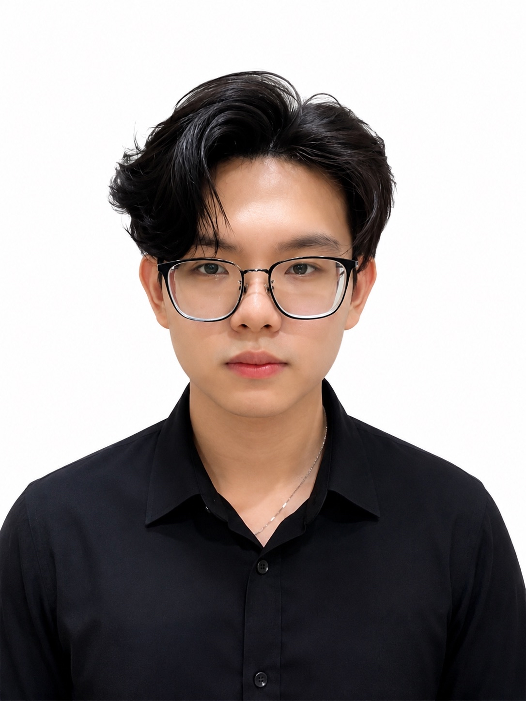
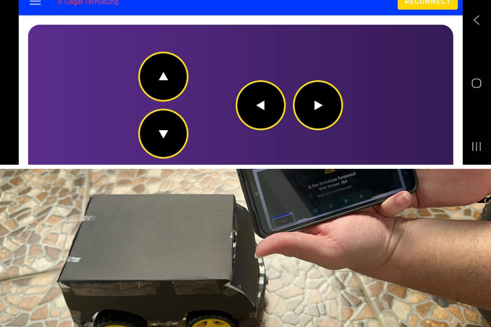
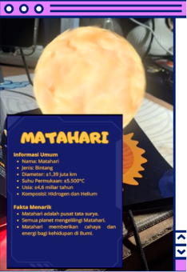
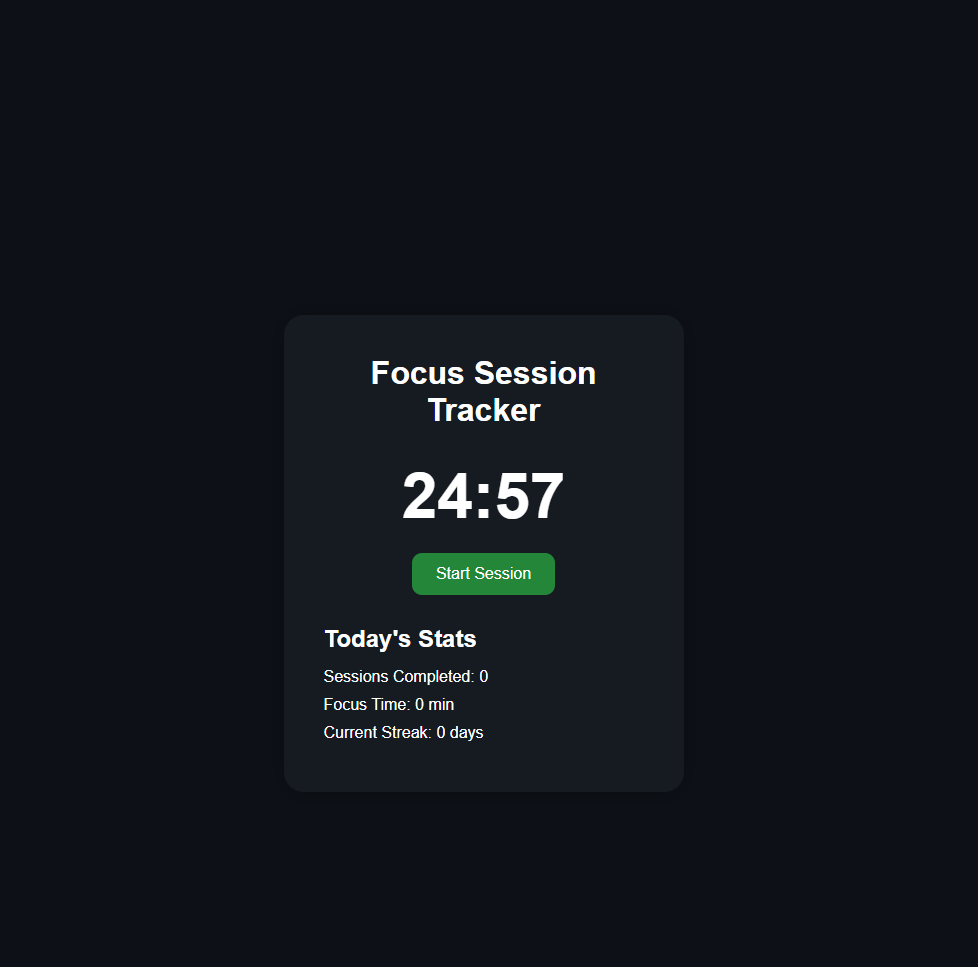

Computer Science Student @ BINUS University
Computer Science Undergraduate @ Binus University with interests in software engineering, AI, and IoT systems. Experienced in building academic and team-based projects involving Andorid applications, machine learning models, and embedded systems.
Computer Science Undergraduate
2024 - Present

Developed an Android-based control system for an Arduino-powered RC Car with real-time gas monitoring and wireless Bluetooth Communication.
Technologies: Java, Android, MVVM, Arduino, Bluetooth HC-06, MQ-02 Sensor
Key Features: Remote vehicle control, gas detection alerts, real-time monitoring, Bluetooth connectivity, customizable interface.
View Project →Developed a Convolutional Neural Network (CNN) model to recognize American Sign Language (ASL) hand gestures from image data.
Technologies: Python, TensorFlow, Keras, OpenCV, NumPy
Key Results: ~97% Validation Accuracy, F1 Score > 0.99
Role: Team Member & Model Developer
Team-based IoT project developed for PKM-KC to assist visually impaired users through obstacle detection and smart mobility support.
Technologies: Python, IoT, ThingSpeak
Role: Team Member & Repository Contributor
View Project →
Interactive Augmented Reality educational application built with Unity and Vuforia Engine. Physical book pages act as image targets that trigger 3D planetary models and interactive information panels, creating an immersive solar system learning experience.
Technologies: C#, Unity, Vuforia Engine, AR
Features: Image Target Recognition, 3D Planet Visualization, Interactive Information Panels, Pinch-to-Zoom, Planet Animation
Role: Team Member
View Project →
Productivity-focused web application designed to help students manage focus sessions and build consistent study habits through simple session tracking.
Technologies:HTML, CSS, JavaScript
View Project →BINUS University • 2026
HIMTI BINUS University • 2024
Bank Central Asia (BCA) • 2024
Sampoerna University • 2024